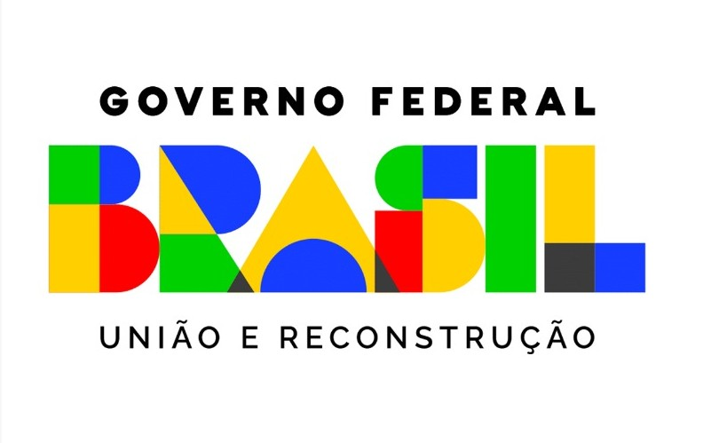
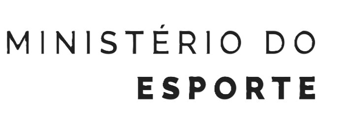
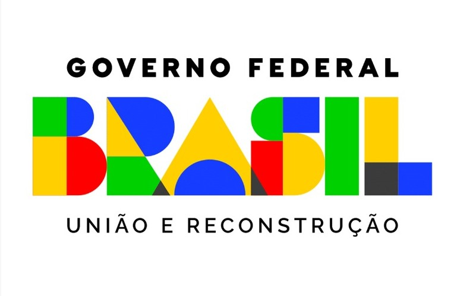
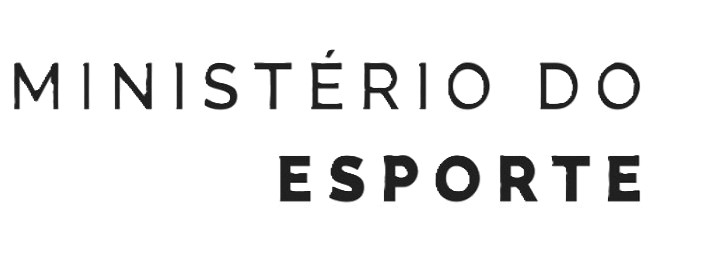

FTBL expo
O MAIOR EVENTO DIGITAL DE FUTEBOL DO MUNDO Pela primeira vez um evento digital vai reunir todos que amam futebol: fãs, profissionais da indústria e os maiores ídolos do esporte.
Página do evento: FTBL expo
CONFUT Nordeste
Evento Presencial a respeito de futebol. Contará com competições, premiações e desafios sendo realizado no mês de novembro.
Página do evento: CONFUT Nordeste
BFEXPO 2022
O futebol é o maior esporte do mundo, fazendo vibrar mais de 3 bilhões de torcedores, além de movimentar U$300 bilhões só no último ano. E não para de crescer. Evolui e se transforma a cada temporada, apresentando sempre oportunidades a todos que acompanham
a modalidade. A BFExpo, maior e mais relevante feira e congresso de futebol da América Latina, entra em campo para fortalecer e impulsionar esse crescimento. Com foco em educação, negócios, experiência e inovação, a edição 2022 escalará
os maiores clubes, marcas e profissionais do mundo para, juntos, traçar o futuro do esporte. Um momento que, como tudo que envolve o futebol pentacampeão, atrairá os holofotes da torcida e do mercado internacional.
Página do evento: BFEXPO 2022
CONGRESSO BRASILEIRO DE CLUBES
O Congresso Brasileiro de Clubes é o maior e mais importante evento de valorização dos Clubes e de seus gestores estatutários, focado na excelência da gestão e no estímulo à integração e a troca de conhecimentos em um ambiente único.
Página do evento: CONGRESSO BRASILEIRO DE CLUBES
III Encontro Nacional de Historiadores do Esporte
O Encontro Nacional de Historiadores do Esporte foi criado com o objetivo de reunir, em anos pares, os pesquisadores que frequentam bienalmente, nos anos ímpares, o Simpósio Temático História do Esporte e das Práticas Corporais, no âmbito do Simpósio
Nacional de História. A iniciativa tem duas motivações.
Página do evento: III Encontro Nacional de Historiadores do Esporte
II CONGRESSO OLÍMPICO BRASILEIRO
O II Congresso Olímpico Brasileiro apresenta o tema Planejamento, um referencial de futuro para o Esporte Olímpico e marca o início de um novo ciclo, no qual o planejamento nos possibilitará perceber a realidade, avaliar os caminhos e construir um referencial
futuro. Palestrantes nacionais e internacionais trarão a perspectiva do atual cenário mundial, que apresenta mudanças rápidas e grandes incertezas.
Página do evento: II CONGRESSO OLÍMPICO BRASILEIRO

 


